Case study 04 · Corporate website & design system
Pfizer’s new brand, live on pfizer.com
I led the UI of pfizer.com through Pentagram’s rebrand, and turned it into the design system Pfizer’s internal pages and dashboards now follow.
Visit pfizer.com →
Home

Careers
Problem
Pfizer’s first formal brand, created by Pentagram, had to work across a very large website and many teams, accessibly and consistently.
What I did
As UI lead, I set up the UI system and components for pfizer.com and led the offshore design team building it.
Result
pfizer.com is live in the new brand, and its system now guides Pfizer’s internal pages and dashboards.
Shared as a portfolio sample. Some screens are simplified, and confidential client data is not shown.
The context
Pfizer’s first formal brand, and a website to carry it
Pentagram built the identity around one purpose: breakthroughs that change people’s lives. I brought it to pfizer.com, so that everyone can use the site, including people with colour blindness, low vision and ADHD.
The brand, on screen
Make it
Pentagram turned Pfizer’s four values into four traits. I turned each trait into a rule the website could follow, and gave motion one job: to support meaning, never to decorate.
Daring
Big type and bold blue, used with confidence.
Focused
One action per section, nothing competing for it.
Compassionate
Readable for colour blindness, low vision and ADHD.
Spirited
Motion that brings warmth to the science.
Tomorrow
Pfizer Tomorrow is drawn from the wordmark, warm and humanist, and carries the masterbrand.
Diatype
A Dinamo superfamily: 76+ styles across normal, condensed, compressed, expanded and mono widths, in 200+ languages.
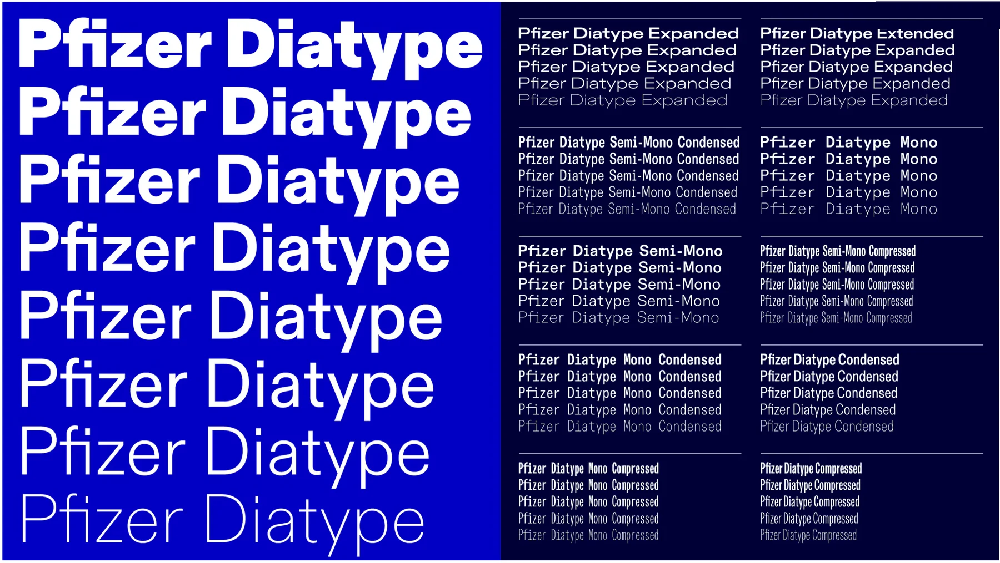
Design system
What I set up, and how teams use it
Tokens, components and guidelines that started on pfizer.com and became the corporate design UI for Pfizer’s other pages and dashboards. The rules were simple enough to repeat.
- H1Breakthroughs72 / 86
- H2Our pipeline52 / 62
- H3Clinical trials42 / 50
- H4Areas of focus32 / 38
- BodyBody text, readable at 20px20 / 27
Blue means clickable. Links, buttons and anything you can act on.
Black means static. Text you read, never text you press.
Every state is designed. Default, hover, focused and disabled, not left to the browser.
Grids, palettes, icons, imagery and video subtitles, handed over as guidelines.
The client files stay with Pfizer, so I rebuilt the system from the live site as a Figma library for this portfolio. Every colour, gap and radius is a token, and every component follows the theme of the frame it sits in.


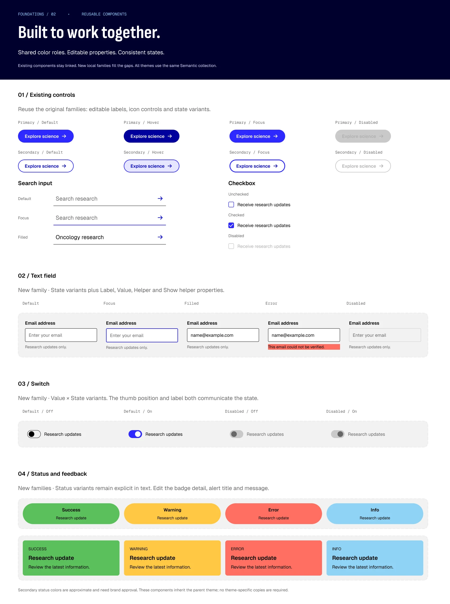
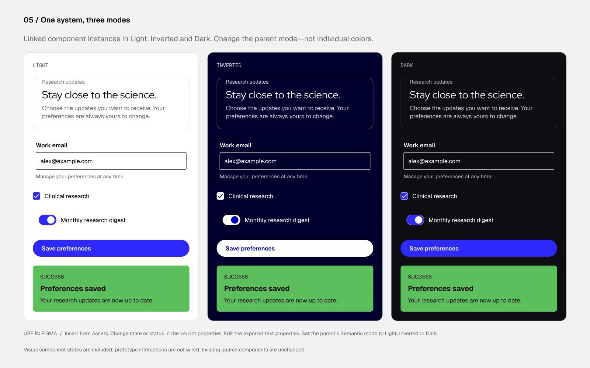
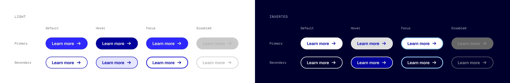
One palette, clear roles, three modes. Primitives hold every value: brand blue, neutrals and the extended spectrum.
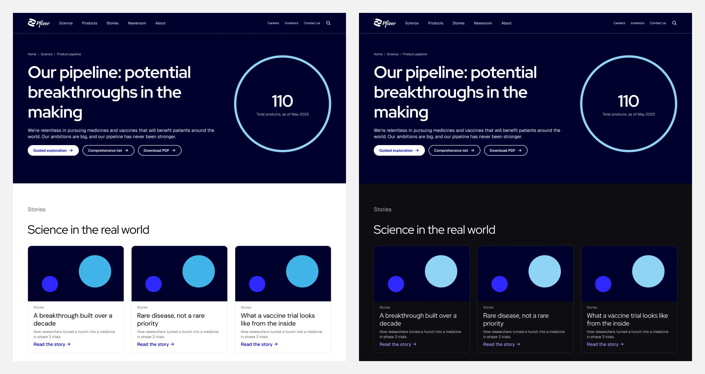
The pipeline landing page, built only from library components, in Light and Dark.
Prototype
The system, in motion
A walkthrough of the pipeline prototype: navigation, hover states and page transitions built on the components, so developers could see exactly how each interaction should behave.
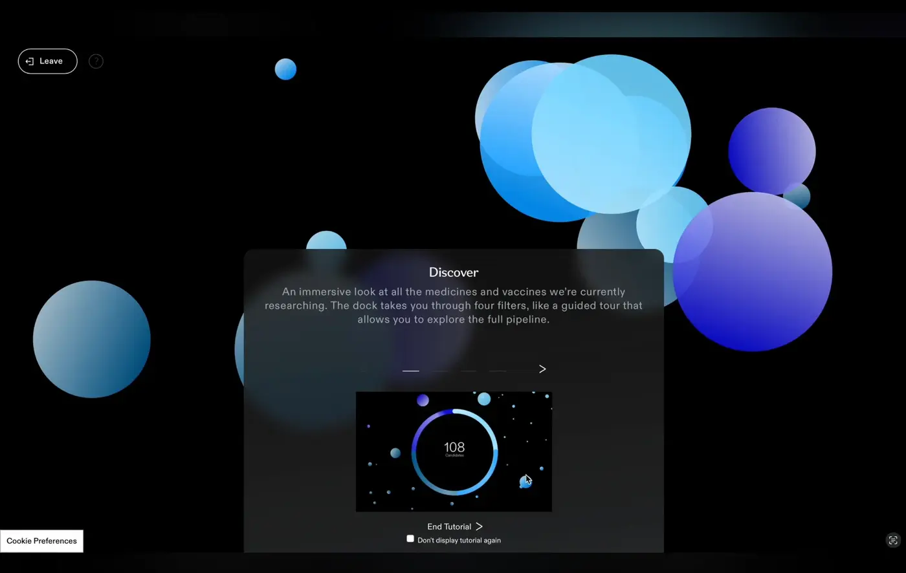
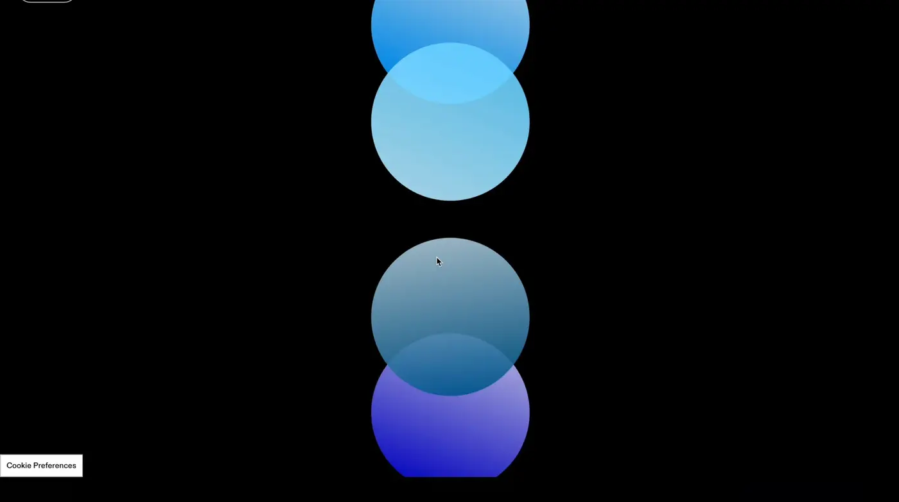
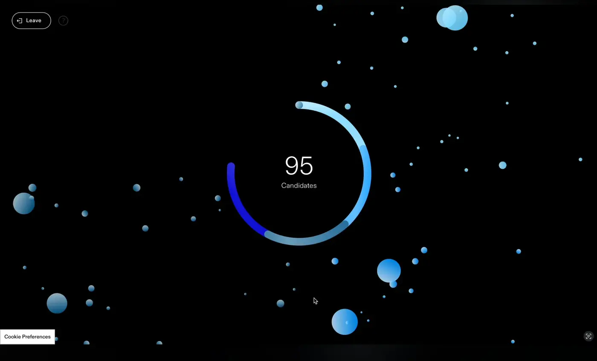
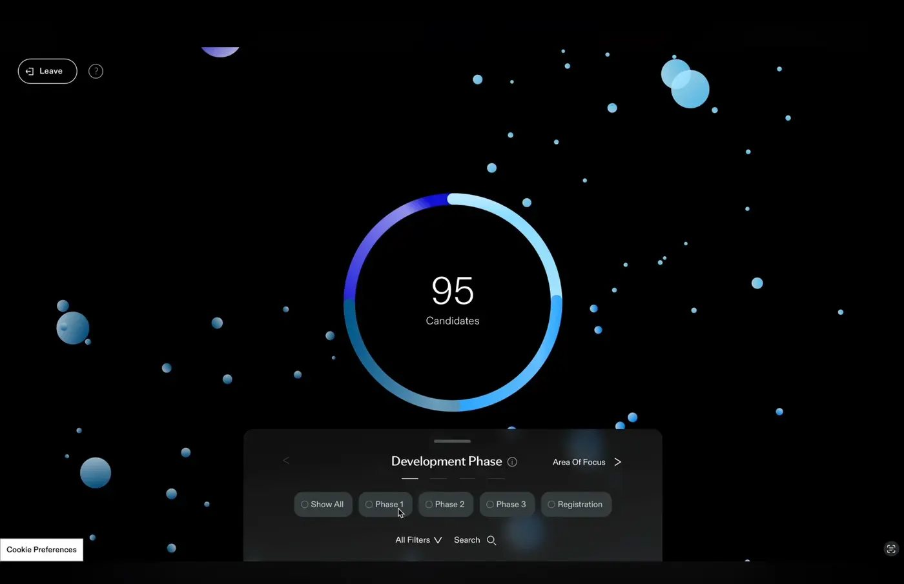
Live screens
The system, on pfizer.com
Every component was specified for desktop, iPad and mobile: article cards go from three across to two to one, and the mega-menu becomes a full-screen list on mobile.

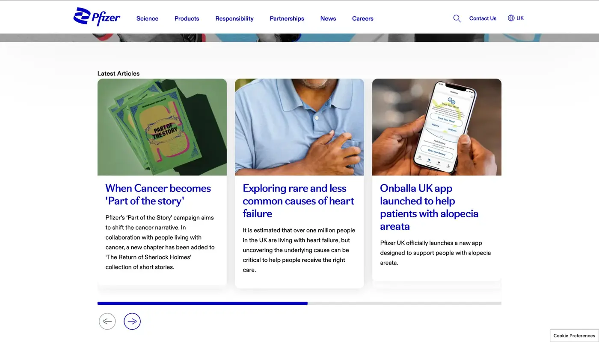

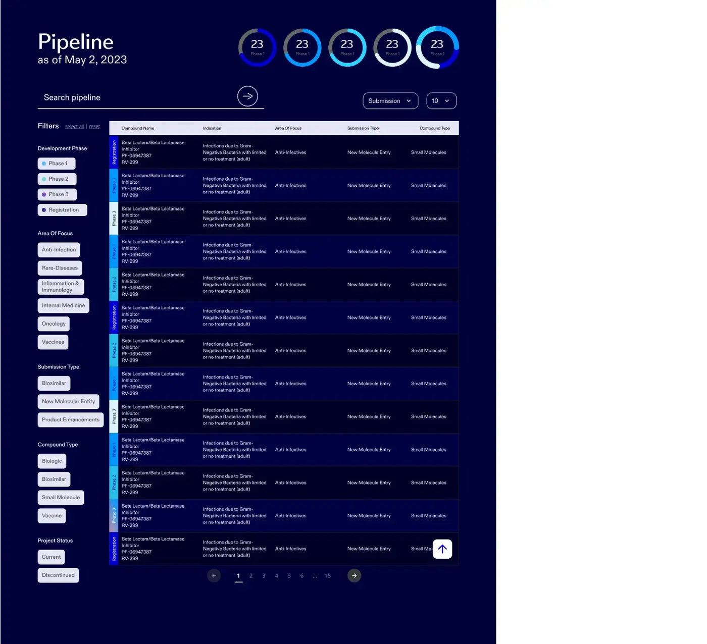

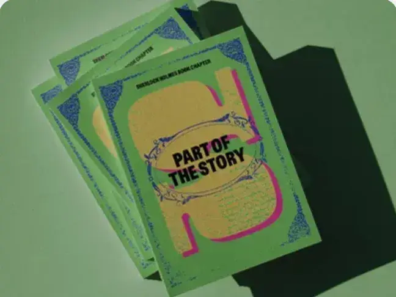
Article card · desktop, three across
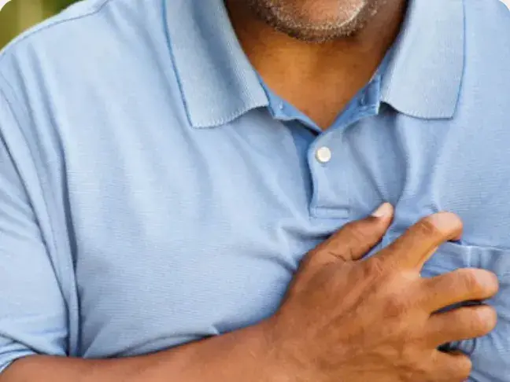
Two across on iPad
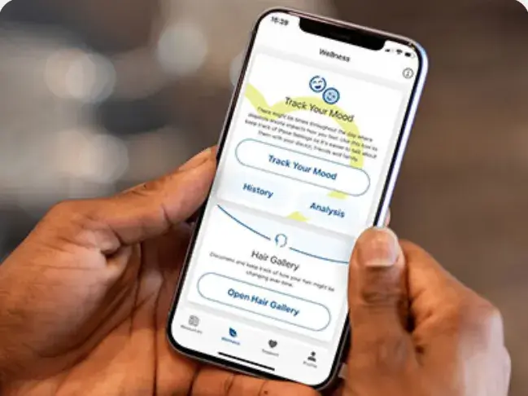
One across on mobile
My role
Leading the offshore design team
I owned the UI and the system, and reviewed every page the TCS team built against it.
Translated Pentagram’s identity into web type, colour and interaction rules.
Designed for colour blindness, low vision and ADHD from the first component.
Led the TCS team through the rebrand, reviewing every page against the system.
Set up the guidelines that internal pages and dashboards now follow.
Impact
The website became the template
Once pfizer.com went live, its system became Pfizer’s corporate design UI. Internal pages, dashboards, the product pipeline and the newsroom now start from the same type, colour rules and components, instead of reinventing the brand.
Visit pfizer.com →Next case study · 05
CRAY →